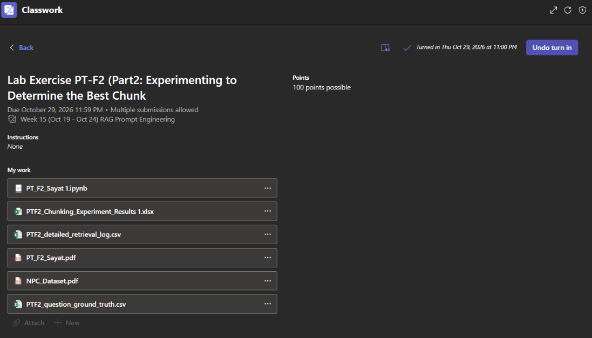

This activity focused on experimenting with different chunking configurations to determine which settings provide better retrieval results for a RAG-based chatbot. It involved testing different chunk sizes and overlaps, checking retrieved information, and comparing experiment results using evaluation metrics. The activity also helped identify how different configurations affect the chatbot's ability to retrieve relevant information from the dataset.
Submitted Outputs
Microsoft Teams Submission Screenshot

Google Colab Notebook
Chunking Experiment Results
Detailed Retrieval Log
PDF Report
NPC Dataset
Question Ground Truth
Learning Reflection
Through this activity, I learned that testing different chunking settings is important in improving a RAG-based chatbot. I understood that chunk size and overlap can affect how the system divides documents and retrieves information. Trying different settings helped me see why it is important to check which configuration works well with the dataset.
I also learned that keeping records of the experiments and checking the results make it easier to compare each configuration. This activity helped me practice testing, reviewing performance results, and organizing technical files. It also gave me a better understanding of how experiments can help improve the performance of a RAG-based chatbot.